위험물산업기사 (2002-05-26 기출문제)
1과목: 일반화학
1.
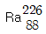
이 α 붕괴할 때 생기는 원소는?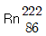
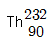
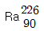
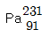
(정답률: 87%)

2. 0.1N-HCl 1.0mL를 물로 희석하여 1000mL로 하면 pH는 얼마나 되는가?
- 2
- 3
- 4
- 5
(정답률: 49%)
3. 2% 황산용액은 몇 몰 용액인가? (단, 20℃에서 28% 황산용액 1mL무게는 1.202g이며, H2SO4의 분자량은 98.082g이다.)
- 3.43M
- 3.97M
- 4.11M
- 5.16M
(정답률: 28%)
4. 다음 기체중에서 최외각 전자가 2개 또는 8개로써 불활성인 것은 ?
- F2와 Br2
- N2와 Cl2
- I2와 H2
- He와 Xe
(정답률: 72%)
5. 다음 중 CO2가스의 건조제로 사용할 수있는 것은?
- CaO
- NaOH
- H2SO4
- KOH
(정답률: 47%)
6. 다음 물질중 물과 반응하여 산(acid)을 만드는 물질은?
- CO2
- Na2O
- NH3
- MgO
(정답률: 47%)
7. 다음은 벤젠에 관한 설명이다. 틀린 것은?
- 화학기호는 C6H12이다.
- 아세틸렌 3분자를 중합하여 얻는다.
- 물에 녹지 않고 여러가지 유기용제로 쓰인다.
- 코올타르를 분류(증류)하여 얻은 경유속에 포함되어 있다.
(정답률: 73%)
8. 방사성 원소에서 방사되는 방사선의 파장이 가장 짧고 투과력과 방출속도가 가장 큰 것은 다음중 어느 것인가?
- α -선(α -Ray)
- β -선(β -Ray)
- γ -선(γ -Ray)
- δ -선(δ -Ray)
(정답률: 72%)
9. 산(acid)의 성질을 잘못 설명한 것은?
- 수용액 속에서 H+으로 되는 H를 가진 화합물이다.
- 신 맛이 있고 푸른색 리트머스 종이를 붉게 변화시킨다.
- 금속과 반응하여 수소를 발생하는 것이 많다.(Fe,Zn)
- 쓴 맛이 있고 붉은색 리트머스 종이를 푸르게 변화시킨다.
(정답률: 79%)
10. 3N-NaOH 100mL에는 몇 g의 NaOH가 들어 있는가? (단, NaOH의 분자량은 40g이다.)
- 4g
- 6g
- 8g
- 12g
(정답률: 52%)
11. 염소원자(Cl)의 최외각 전자궤도의 전자수는 몇 개인가?
- 1
- 2
- 7
- 8
(정답률: 77%)
12. 소금물(NaCl수용액)을 전기 분해시 얻을 수 있는 3가지 물질로 맞는 것은?
- Na,H2,Cl2
- NaOH,H2,Cl2
- HClO3,HCl,H2O
- NaNO3,H2,HCl
(정답률: 55%)
13. 다음 중 암모니아성 질산은(AgNO3) 용액을 반응하여, 거울을 만드는 것은?
- CH3CH2OH
- CH3OCH3
- CH3COCH3
- CH3CHO
(정답률: 70%)
14. 반응속도와 온도와의 정량적인 관계는 누구에 의해 실험적으로 확립되었나?
- Arrhenius
- Lechatelier
- Van't Hoff
- Faraday
(정답률: 42%)
15. 다음은 볼타전지를 나타낸 것이다. 볼타전지에 관한 설명으로 옳은 것은?
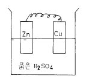
- (-)극은 Cu판, (+)극은 Zn 판이다
- 전자는 Cu판에서 Zn판으로 이동한다
- Zn판에서는 산화, Cu 판 에서는 환원이 일어난다
- 용액중의 SO42-이 감소한다
(정답률: 59%)
16. 다음중 수용액의 액성이 산성이 아닌 것은?
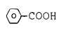
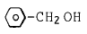
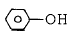
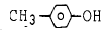
(정답률: 34%)
17. 다음은 엔트로피를 증가시키는 과정들에 대한 설명(예)이다. 잘못 된 것은?
- 액체의 고화
- 순수한 액체가 증발하는 과정
- 큰 분자를 작은 분자로 쪼개는 과정
- 계에 있는 기체의 몰수를 증가시키는 과정
(정답률: 55%)
18. 다음 중 에틴(아세틸렌 : C2H2)을 원료로 하지 않은 것은?
- 아세트산
- 염화비닐
- 에탄올
- 메탄올
(정답률: 57%)
19. 배수 비례의 법칙이 성립되는 예를 나타내는 것은?
- O2, O3
- H2SO4, H2SO3
- H2O, H2S
- SO2, SO3
(정답률: 65%)
20. 다음 중 용액에 대한 설명이 아닌 것은?
- 균일 혼합물을 말한다.
- 모든 합금은 고용체로 분류된 용액이다.
- 기체 혼합물, 액체 용액 그리고 고용체로 분류될 수있다.
- 용액속의 성분 중 함량 비율이 가장 큰 것을 용매, 용매에 녹아 있는 물질을 용질이라고 한다.
(정답률: 49%)
2과목: 화재예방과 소화방법
21. NaHCO3 A(외약)약제와 AI(SO4)3 B(내약)약제로 되어 있는 소화기는?
- 산,알칼리소화기
- 드라이켈미칼소화기
- 탄산가스소화기
- 포말소화기
(정답률: 41%)
22. 제연설비의 유도 풍도안의 풍속은 다음 중 어느 것인가?
- 10m/sec
- 20m/sec
- 30m/sec
- 40m/sec
(정답률: 44%)
23. 소화제로 할로겐화물을 사용하는 이유가 아닌 것은?
- 비점이 낮다.
- 공기보다 가볍고 불연성이다.
- 증기가 되기 쉽다.
- 공기의 접촉을 차단한다.
(정답률: 51%)
24. 화학포에 사용되는 기포안정제가 아닌 것은?
- 탄산수소나트륨
- 단백질분해물
- 계면활성제
- 사포닝
(정답률: 45%)
25. 특수가연물인 가연성 액체류의 화재시 소화설비의 적응성에 맞지 않는 것은?
- 포소화설비
- 인산염류
- 이산화탄소설비
- 스프링쿨러설비
(정답률: 58%)
26. 가연성고체 위험물의 화재에 대한 특성은?
- 연소 속도가 빠르다.
- 위험물 자체에 산소를 품고 있다.
- 고온에서 착화되기 쉽다.
- 금속분은 물에 안전하다.
(정답률: 63%)
27. 다음 인화성액체 위험물의 위험인자 중 그 정도가 작거나 낮을수록 위험성이 커지는 것은?
- 비열
- 증기압
- 연소열
- 연소범위(폭발범위)
(정답률: 52%)
28. 가연성 물질이 공기중에서 연소할 때 연소상의 설명으로 알맞지 않는 것은?
- 목탄과 같이 공기와 접촉하여 표면에서 불타는 연소를 표면연소라 한다.
- 알코올의 연소는 표면연소 이다.
- 산소공급원을 가진 물질자체가 연소하는 것을 자기연소라 한다.
- 목재와 같이 열분해되어 가연성기체가 연소하는 것을 분해연소라 한다.
(정답률: 73%)
29. 분말 소화설비에 사용하는 소화약제 종별 중 방호구역의 체적 1m3 에 대한 제4종 분말소화 약제의 양은?
- 0.15㎏
- 0.20㎏
- 0.24㎏
- 0.30㎏
(정답률: 34%)
30. 제3류 내지 제6류 위험물의 소화방법을 설명한 것으로 잘못된 것은?
- 제3류 위험물 - 물, 강화액, 포말 등 물계통의 소화약제를 사용하는 것이 가능한 경우도 있다.
- 제4류 위험물 - 분무주수에 의한 소화가 가능한 경우도 있다.
- 제5류 위험물 - 보통 다량의 물로 냉각소화 하지만 CO2 등으로 질식소화하는 것도 효과가 있다.
- 제6류 위험물 - 상황에 따라 다량의 물을 사용한다.
(정답률: 40%)
31. 방유제가 없는 포소화설비의 개방밸브 중 선택밸브는 탱크로부터 얼마의 거리를 두고 설치하는가? (단,직경 15m 미만의 탱크)
- 15m 이상
- 25m 이상
- 30m 이상
- 35m 이상
(정답률: 49%)
32. 소화 활동시설 설비가 아닌 것은?
- 연결송수관
- 비상콘센트
- 동력소방펌프
- 무선통신보조
(정답률: 22%)
33. 외벽이 내화구조인 위험물 저장소용 건축물의 연면적이 1,000제곱미터인 경우 소화기구의 소요단위는?
- 6단위
- 7단위
- 13단위
- 14단위
(정답률: 60%)
34. 경보설비에 속하지 않는 것은?
- 자동화재탐지설비
- 연결살수설비
- 비상방송설비
- 자동식싸이렌
(정답률: 69%)
35. 피난구 유도표지( 중형 ) 는 가로의 길이가 430 밀리미터(㎜) 이상 630 밀리미터(㎜)미만으로 하는데 가로와 세로의 비로서 가장 적당한 것은?
- 1:1
- 2:1
- 3:1
- 4:1
(정답률: 51%)
36. 소화기의 사용방법이 잘못된 것은?
- 성능에 따라 불 가까이 접근하여 사용할 것
- 바람이 불어오는 쪽을 보며 소화작업을 할 것
- 양옆으로 비로 쓸듯이 골고루 사용할 것
- 적응화재에만 사용할 것
(정답률: 77%)
37. 포 헤드설치에 관한 것으로 홈헤드 하나가 화재시 방호 할수있는 바닥면적은 얼마 이어야 하는가 ?
- 5m2
- 7m2
- 8m2
- 9m2
(정답률: 57%)
38. 사염화탄소 소화약제는 화염에 분해되어 맹독성의 가스가 발생하므로 사용하지 못하도록 하고 있다. 이 때 발생된 가스는?
- COCl2
- HCN
- PH3
- HBr
(정답률: 44%)
39. 자동화재탐지설비의 감지기 중 열에 의한 공기의 팽창을 이용한 화재감지기는?
- 차동식스포트형 감지기
- 정온식스포트형 감지기
- 이온화식스포트형 감지기
- 광전식스포트형 감지기
(정답률: 39%)
40. 다음 중 가연물이 될 수 있는 것은?
- Ar
- SiO2
- N2
- Rb
(정답률: 36%)
3과목: 위험물의 성질과 취급
41. 삼산화크롬(CrO3)의 성상에 관한 설명중 옳은 것은?
- 황색의 침상결정이다.
- 물, 에테르 황산에 녹는다.
- 지정수량은 300kg이고, 강력한 산화제이다.
- 용점이상으로 가열하면 200∼250℃에서 오존을 방출하고 암적색의 크롬산화물로 변한다.
(정답률: 51%)
42. 금속칼륨과 금속나트륨에 공통되는 성질로서 틀린 것은?
- 경유중에 저장한다.
- 피부 접촉시 화상을 입는다.
- 물과 반응하여 수소를 발생한다.
- 알코올과 반응하여 포스핀가스가 발생한다.
(정답률: 63%)
43. 인화칼슘(Ca3P2)의 위험성으로 옳은 것은?
- 물과 반응해서 수소를 발생한다.
- 산소와 반응해서 불연성의 시안가스를 발생한다.
- 물과 반응해서 독성이 있는 가연성 기체를 발생한다.
- 물과 맹렬히 반응해서 유독한 아황산가스를 발생한다
(정답률: 69%)
44. 위험물 지하탱크 저장소의 탱크의 매설기준에 부적합한 것은?
- 탱크와 내벽과 사이는 상,하,좌,우로 0.⑤m이상의 간격을 둔다.
- 탱크 본체 윗 부분은 지면으로 부터 0.6m 이상의 깊이로 매설한다.
- 탱크를 인접하여 설치하는 경우에는 그 상호 간에 1m 이상의 간격을 둔다.
- 2개 이상의 탱크 용량의 합계가 지정수량의 100배 미만일 경우에는 상호간격을 0.5m 이상으로 한다.
(정답률: 46%)
45. 에테르(Ether)[A],아세톤(Acetone)[B],피리딘(Pyridine) [C], 톨루엔(Toluene)을 [D]라고 할때 다음중 인화점이 낮은 것부터 순서대로 되어 있는 것은?
- (A)-(B)-(D)-(C)
- (A)-(C)-(B)-(D)
- (B)-(C)-(D)-(A)
- (D)-(C)-(B)-(A)
(정답률: 40%)
46. 제2종 가연물이 아닌 것 ?
- 보루네올
- 락카퍼티
- 페놀
- 나프탈렌
(정답률: 38%)
47. 제4류 위험물에 대하여 다음 설명중 옳은 것은?
- 착화온도 이상의 온도로 가열시키면 연소된다.
- 불이나 불꽃이 있으면 인화점이하에서도 연소된다.
- 상온이하 에서는 가연성증기를 발생하는 것이 없다.
- 불이나 불꽃이 없으면 착화온도 이상의 온도라도 타지 않는다.
(정답률: 43%)
48. 소방법에서 정의한 제2석유류의 인화점은 얼마인가? (단, 인화성 액체의 용량이 40wt% 이하는 제외함.)
- 20℃이하
- 21℃∼70℃미만
- 70℃∼200℃미만
- 200℃ 이상
(정답률: 76%)
49. 다음 중 산소 공급원이 될 수 없는 것은?
- 과망간산칼륨
- 염소산칼륨
- 산화칼슘
- 질산칼륨
(정답률: 47%)
50. 구리, 은, 마그네슘과 아세틸라이드를 만들고 연소범위가 2.5∼38.5%인 물질은?
- 아세트알데히드
- 알킬알루미늄
- 산화프로필렌
- 콜로디온
(정답률: 55%)
51. 진한 질산을 가열 할 경우 발생하는 자극성 갈색 증기는?
- O
- NO2
- N2
- SO2
(정답률: 60%)
52. 피뢰 설비는 지정수량 얼마 이상의 위험물을 취급하는 제조소에 설치하는가?
- 지정수량 10배 이상
- 지정수량 7배 이상
- 지정수량 5배 이상
- 지정수량 3배 이상
(정답률: 71%)
53. 다음 위험물을 취급할 때 고온체와 접촉하여도 화재위험이 적은 류의 위험물은?
- 제2류 위험물
- 제4류 위험물
- 제5류 위험물
- 제6류 위험물
(정답률: 53%)
54. 다음중 착화온도가 가장 낮은 것은?
- 황린
- 적린
- 유황
- 삼황화인
(정답률: 53%)
55. 아래(보기)와 같은 물질은?
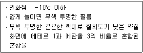
- 산화프로필렌
- 콜로디온
- 이황화탄소
- 아세트알데히드
(정답률: 38%)
56. 다음 그림은 지정 유기과산화물 저장창고 창의 규정을 나타낸 것이다. 창과 바닥으로부터 거리(a), 창의 면적(b)은 각각 얼마인가? (단, 바닥 면적은 150m2이다.)
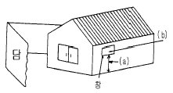
- (a) 2m 이상, (b) 800cm2이상
- (a) 3m 이상, (b) 600cm2이상
- (a) 2m이상, (b) 400cm2이내
- (a) 3m 이상, (b) 300cm2이내
(정답률: 64%)
57. 다음은 위험물의 저장시설에 관한 설명이다. 이들 중 옳지 않는 것은?
- 옥외탱크저장시설 : 옥외에 있는 탱크에 위험물을 저장하는 시설
- 지하탱크저장시설 : 지하에 매설되어 있는 탱크에 위험물을 저장하는 시설
- 간이탱크저장시설 : 간이 탱크에 위험물을 저장하는 시설
- 이동탱크저장시설 : 차량에 고정시킨 탱크에 위험물을 저장하는 시설로써 지정수량의 0.2배 이상의 저장시설
(정답률: 79%)
58. 위험물 제조소에서 아래와 같이 위험물을 저장하고 있는 경우 지정수량의 몇배가 보관되어 있는 것인가?
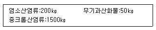
- 3.5배
- 4.5배
- 5.5배
- 6.5배
(정답률: 41%)
59. 가공성, 가황법 및 가황체의 물리적성질 등이 천연고무와 거의 동일한 합성 천연고무로서 타이어에 주로 이용되는 고무류는 어느 것인가?
- 스티렌부타디엔고무(SBR)
- 아크릴로니트릴부타디엔고무(NBR)
- 이소프렌고무(IR)
- 우레탄고무(UR)
(정답률: 38%)
60. 알킬알루미늄의 화재시 소화약제로 가장 적당한 것은?
- CO2
- 물
- 팽창질석
- 산, 알칼리
(정답률: 76%)